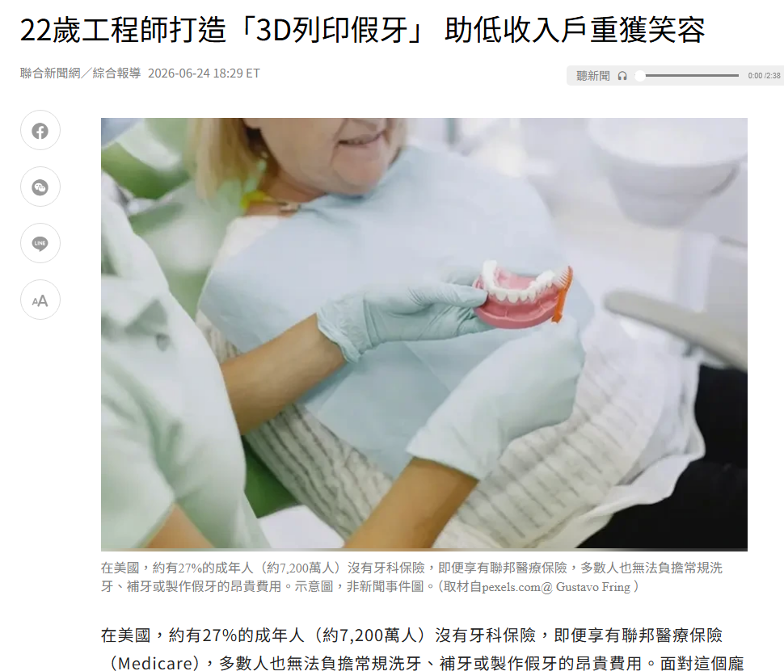
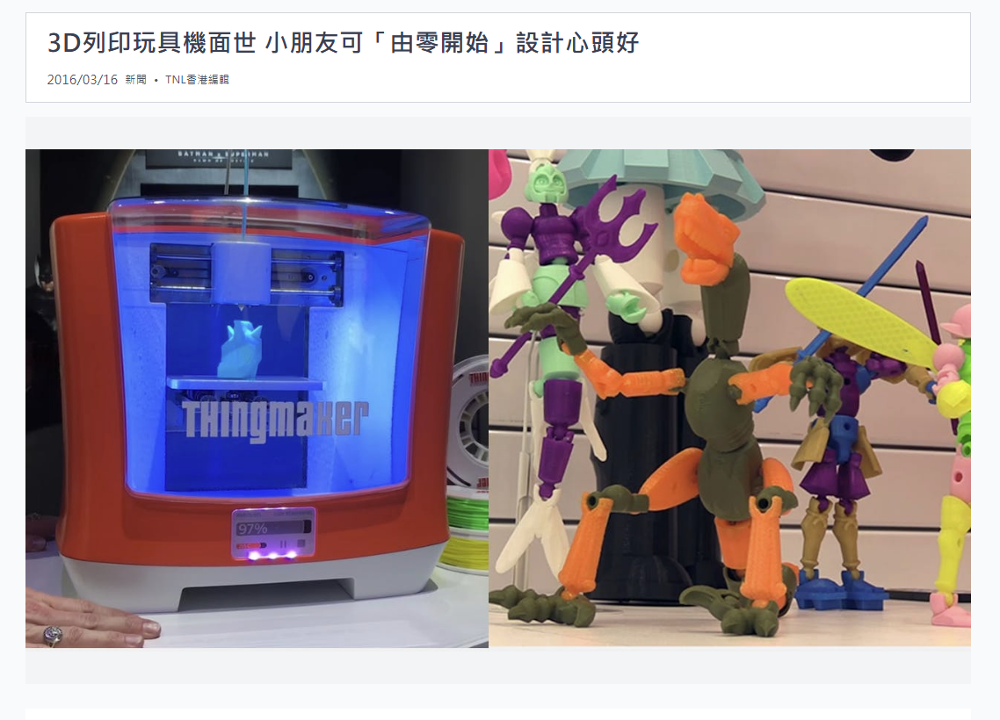
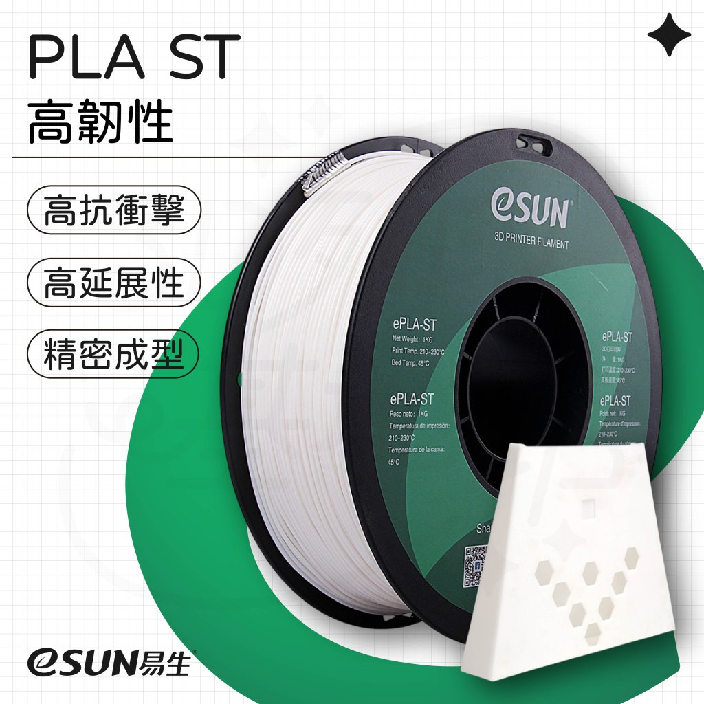
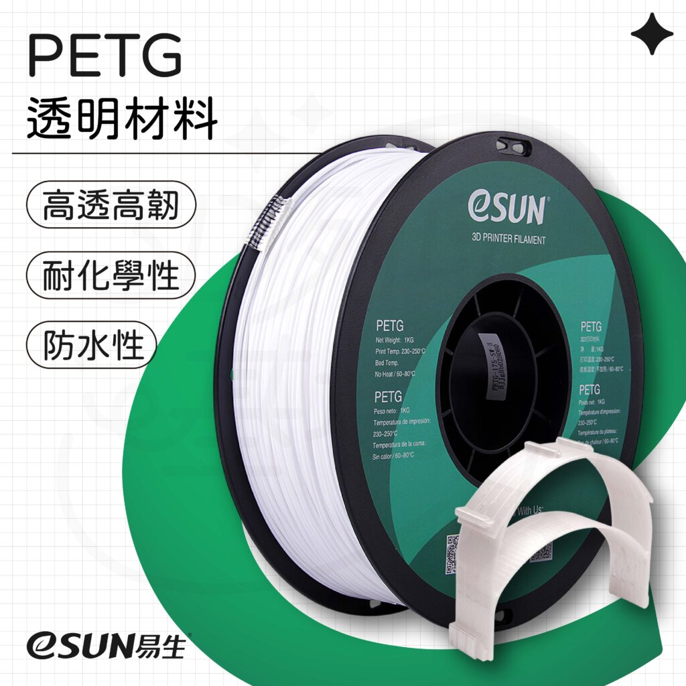
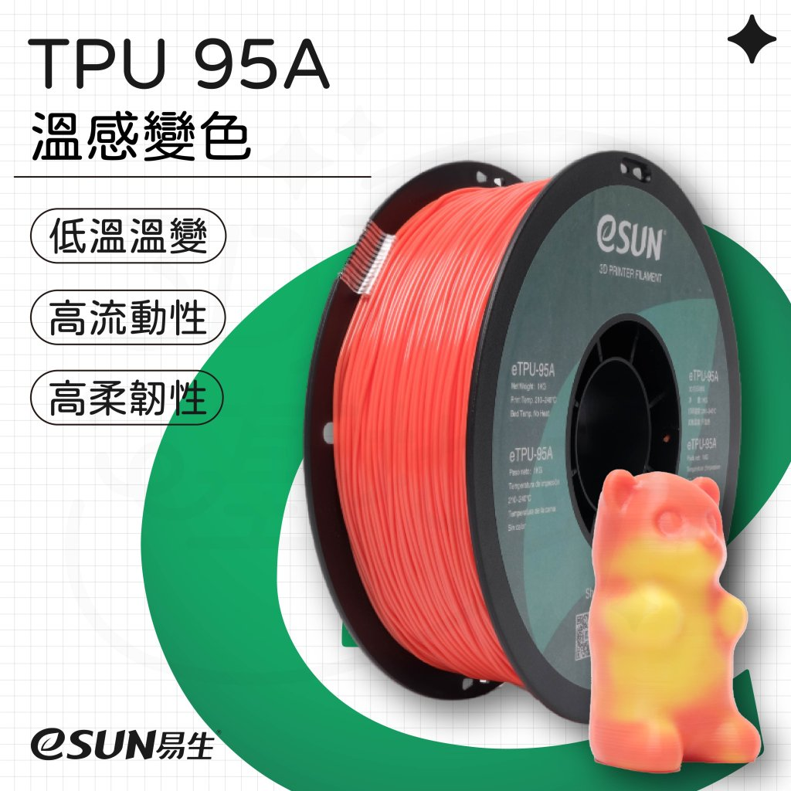
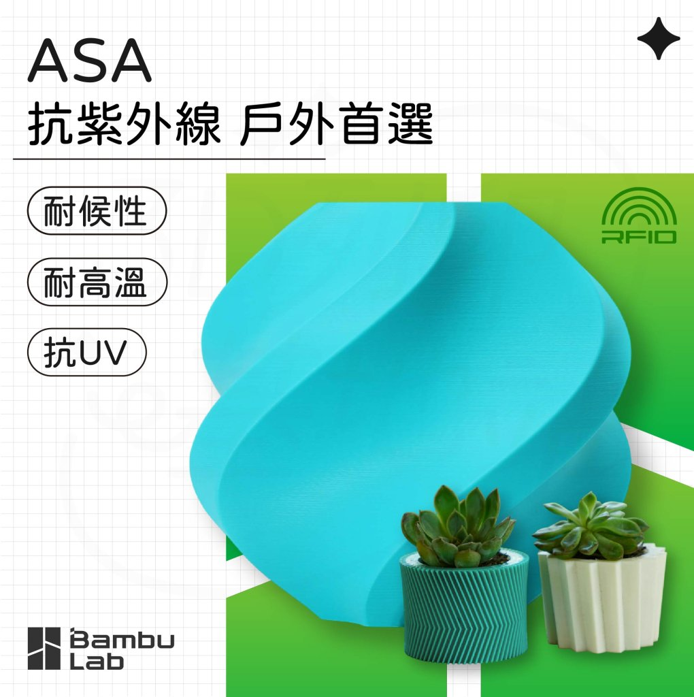
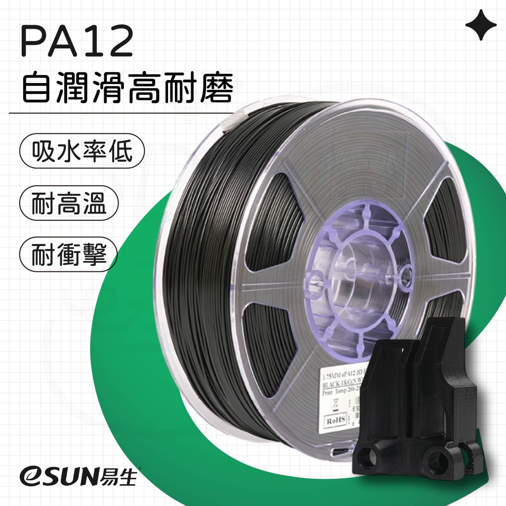
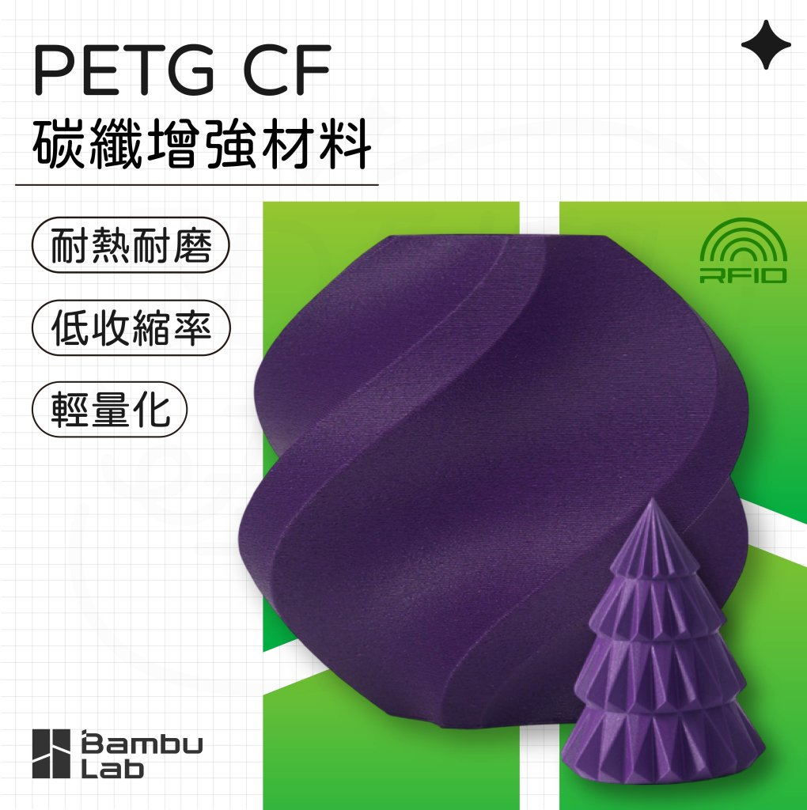

醫療與公益
3D 列印假牙降低客製化門檻
牙科假牙需要符合個人口腔形狀，傳統製作成本高。3D 列印能把掃描、設計與製作串成數位流程，讓客製化醫療輔具更容易被討論與實作。
讓學員在短時間內看懂 3D 列印的發展、技術類型與完整流程，並完成一個可切片的 Tinkercad 小作品。
用三則案例帶出 3D 列印的價值：它可以降低客製化成本、創造新的產品型態，也能讓孩子從零開始設計自己的作品。

牙科假牙需要符合個人口腔形狀，傳統製作成本高。3D 列印能把掃描、設計與製作串成數位流程，讓客製化醫療輔具更容易被討論與實作。
可按壓、可變形、可客製的指尖玩具，展現 3D 列印在小量生產與創意商品上的彈性。設計者可以快速測試造型、觸感與市場反應。

玩具是最容易引起學員想像的題材。從角色、零件、關節到配件，3D 列印讓設計不只停在圖紙，而是可以拿在手上反覆修改。
這份安排適合講師照表操作，也能作為學員講義。前段建立概念，中段完成 Tinkercad 三段式作業，後段保留切片、列印觀察、故障排除與成果檢核。
用時間線讓學員先建立脈絡：3D 列印不是玩具，而是從工業快速成型逐步走向教育與日常創作。
聚焦初學者最需要分辨的差異：成型方式、材料、優點、限制與適用情境。
| 技術 | 成型方式 | 常見材料 | 適合用途 | 教學提醒 |
|---|---|---|---|---|
| FDM / FFF | 加熱塑膠線材並逐層堆疊 | PLA、PETG、ABS、TPU | 教育、原型、機構件、生活小物 | 最適合本課程示範 |
| SLA / Resin | 用光固化液態樹脂 | 光敏樹脂 | 模型、公仔、牙科、細緻零件 | 精細但後處理與安全要求較高 |
| SLS | 雷射燒結粉末材料 | 尼龍粉末、複合材料 | 功能性零件、小量製造 | 設備較貴，多為專業服務 |
| 金屬列印 | 熔融或燒結金屬粉末 | 鈦合金、不鏽鋼、鋁合金 | 航太、醫療植入物、工業零件 | 適合介紹概念，不建議入門實作 |
材料選擇會影響作品外觀、強度、彈性、耐熱與列印難度。入門課程建議先以 PLA 為主，再用用途比較帶出其他材料。
| 材料分類 | 常見材料 | 特性 | 適合用途 | 教學提醒 |
|---|---|---|---|---|
| FDM 熱塑性線材 | PLA、PETG、ABS、ASA、TPU、Nylon | 加熱後軟化並擠出，冷卻後成型；材料選擇最多，也最適合教學。 | 姓名牌、鑰匙圈、原型件、教具、收納零件、簡易機構件。 | 本課程建議用 PLA，成功率高、氣味低、翹曲少。 |
| PLA 類材料 | 一般 PLA、PLA+、木質 PLA、絲綢 PLA | 容易列印、外觀選擇多，但耐熱與韌性普通。 | 入門作品、展示模型、裝飾品、教育用模型。 | 不要放在高溫環境，例如車內日曬處。 |
| 功能性 FDM 材料 | PETG、TPU、ABS / ASA、Nylon、PC | 依材料可提升韌性、彈性、耐候、耐磨或耐熱能力。 | PETG 適合耐用零件；TPU 適合軟墊與保護套；ASA 適合戶外件；Nylon 適合耐磨零件。 | 列印難度較高，可能需要熱床、封箱、乾燥保存或通風。 |
| 光固化樹脂 | 標準樹脂、韌性樹脂、耐高溫樹脂、鑄造樹脂 | 細節精緻、表面平滑，但需清洗、二次固化與安全防護。 | 公仔、牙科模型、珠寶原型、小型精細零件。 | 需戴手套並避免皮膚接觸，課堂可展示樣品即可。 |
| 粉末材料 | PA12 尼龍粉、TPU 粉、玻纖填充尼龍 | 不一定需要支撐，可做較複雜形狀，強度與耐用度佳。 | 功能性原型、小量生產、卡扣、活動關節、複雜零件。 | 多由專業設備或列印服務完成，適合介紹產業應用。 |
| 金屬材料 | 不鏽鋼、鋁合金、鈦合金、工具鋼 | 強度高、耐熱佳，可製作高階功能零件，但成本與設備門檻高。 | 航太、醫療植入物、模具、散熱件、高強度機構件。 | 入門課程以案例介紹即可，重點是理解 3D 列印不只限於塑膠。 |
PLA：好列印、成功率高、適合姓名牌、鑰匙圈與教具。適合用來建立第一次成功經驗。
PETG：比 PLA 更有韌性與耐熱性，適合簡易機構件、收納零件與常被拿取的作品。
TPU：適合軟墊、保護套、輪胎、止滑件，但列印速度通常要放慢。
以下照片取自 3DPBASE 材料商品頁，可用來讓學員直觀看到不同線材外觀。講解時可搭配「容易列印、耐用、柔軟、耐候、耐磨、複合材料」六個關鍵字。






鞋子是很好的延伸案例，因為它同時需要尺寸客製、彈性、耐磨、支撐與舒適度。可用這兩支影片讓學員比較「個人原型製作」與「品牌量產鞋底」的差異。
這支影片適合放在入門課，用來說明 FDM 也能製作可穿戴原型。重點可放在 TPU/TPE 類柔性線材、列印時間、支撐性、耐用度與反覆修改。
開啟 YouTube 影片這支影片適合說明工業級光固化連續列印，透過彈性樹脂與晶格結構製作鞋中底。重點可放在客製化、量產速度、材料性能與傳統製鞋限制。
開啟 YouTube 影片| 比較項目 | FDM / 柔性線材印鞋 | Carbon DLS 光固化鞋中底 |
|---|---|---|
| 定位 | 個人創作、快速原型、設計驗證 | 品牌產品開發、客製化鞋中底、量產製程 |
| 材料 | TPU、TPE 等柔性線材 | 彈性光固化樹脂或聚氨酯類材料 |
| 優點 | 設備容易取得，適合學校與 Maker 實驗 | 表面品質佳，可做複雜晶格與性能調校 |
| 限制 | 列印時間長，層紋明顯，舒適度與耐用度需反覆調整 | 設備、材料與後處理門檻高，不適合一般入門實作 |
| 課堂提問 | 如果要讓鞋子更舒服，模型要改哪裡？ | 為什麼晶格結構適合拿來做鞋中底？ |
這一段是整堂課的骨架，讓學員知道 Tinkercad、STL、切片軟體與印表機各自負責哪一段。
這一章是實作核心，先讓學員熟悉環境與視角，再從基本工具、尺寸控制、實體與洞的布林組合，走到匯出與匯入。
| 小節 | 講師示範 | 學員練習 | 檢核點 |
|---|---|---|---|
| 環境與視角 | 旋轉、縮放、平移、切回上視圖 | 從正面、上方、等角視角觀察同一物件 | 能找到工作平面與視角方塊 |
| 繪圖工具 | 拖曳基本形狀、文字、尺規與工作平面 | 放入底板、文字、圓柱 | 能選取、移動、複製與刪除物件 |
| 實體與洞 | Solid / Hole 切換、群組切洞 | 在姓名牌左側做出吊孔 | 洞有穿透底板，模型沒有懸空 |
| 尺寸與微調 | 用 Ruler 輸入尺寸、位置與高度 | 把底板調成 70 × 25 × 3 mm | 尺寸符合要求，文字高度適合列印 |
| 交集與聯集 | 用 Group 展示 Solid 聯集與 Hole 差集 | 完成文字凸起與吊孔切除 | 能說出 Group 對 Solid 與 Hole 的不同效果 |
| 匯出與匯入 | Export STL，Import 回 Tinkercad 檢查比例 | 下載作品 STL 並準備切片 | 檔案可匯入切片軟體且大小正確 |
學習目標：熟悉 Tinkercad 環境、滑鼠視角、物件拖曳、尺寸調整、對齊、群組與匯出 STL。
學習目標：理解實體與洞的差異，練習聯集、差集、內腔、滑槽與可活動間隙的設計概念。
學習目標：從造型建模進入功能設計，思考尺寸、穩定性、支撐角度、壁厚、孔洞與列印方向。
| 作業 | 教師帶法 | 學員交件 | 評量檢核 |
|---|---|---|---|
| 個人立體名牌 | 全班同步操作，講師一步一步示範視角、尺寸、對齊、群組與匯出。 | STL 檔、切片預覽畫面，若時間允許可排入現場列印。 | 有文字、有吊孔或凹凸設計、尺寸合理、可正常切片。 |
| 可抽蓋小盒子 | 講師示範盒身挖空與滑蓋間隙，學員完成盒身、內腔與一個可抽蓋方向。 | 盒身 STL、蓋子 STL，或一張能看出滑蓋結構的截圖。 | 能說明 Solid、Hole、Group 的效果，盒身與蓋子不互相卡死。 |
| 手機架或盆栽容器 | 講師展示設計限制，學員二選一起稿，進度快者完成 STL 與切片預覽。 | 作品 STL、用途說明一句話、切片預覽畫面。 | 功能清楚、尺寸可用、底部穩定、孔洞或支撐結構符合用途。 |
上課前可先把這些連結放在投影片或學習單中。學員若沒有帳號，可先從課堂代碼或官方學習中心進入。
進入 Tinkercad 建立或開啟 3D Design 專案，適合作為課堂實作的主要入口。
前往 Tinkercad官方學習中心，包含 3D Design、Circuits、Codeblocks 與課堂活動資源，適合課後自學。
前往 Learning Center專注 3D 建模的官方學習頁，適合安排給學員做延伸練習，例如形狀組合、對齊、群組與挖洞。
前往 3D Design 教學可瀏覽其他使用者分享的作品，適合課前找靈感，也能讓學員觀察作品如何由基本形狀組成。
前往 Gallery若講師使用 Tinkercad Classrooms，可讓學生從這裡輸入課堂代碼加入，方便集中管理學員作品。
前往 Join Class示範 Cura 或 PrusaSlicer 都可以。重點不是背參數，而是知道每個設定會影響品質、強度、時間或成功率。
課堂示範建議固定使用一套切片軟體，避免學員介面不同而跟不上；其他軟體可依學校設備、印表機品牌或課後延伸需求下載。下載時請優先使用官方網站或官方 GitHub Releases。
最常見的入門切片軟體之一，適合 FDM 桌上型 3D 印表機教學。介面清楚，預設參數容易上手。
下載 Cura適合 Prusa 機器，也可用於許多 FDM 印表機。參數分層清楚，適合進一步理解切片設定。
下載 PrusaSlicer適合 Bambu Lab 印表機，支援專案式 3MF、列印板管理、多色列印與遠端控制流程。
下載 Bambu Studio進階玩家常用，支援多種機型與校正工具。適合課後延伸到流量校正、壓力提前與高速列印調校。
下載 OrcaSlicer適合 Creality 系列印表機，內建常見機型設定，適合使用 Ender、K 系列或 Creality 生態設備的班級。
下載 Creality Print匯入 STL、置中模型、檢查底面貼平台、選擇材料、設定層高與填充、切片、預覽路徑、儲存 G-code。
模型太小、沒有貼平平台、文字懸空、孔洞太小、支撐未移除、機器材料或噴嘴設定選錯。
用對照範例建立清楚觀念：STL 不是列印指令，G-code 也不是拿來重新編輯外型的模型檔。
solid nameplate
facet normal 0 0 1
outer loop
vertex 0 0 3
vertex 70 0 3
vertex 70 25 3
endloop
endfacet
endsolid nameplate
G28 ; home all axes M104 S200 ; set nozzle temp M140 S60 ; set bed temp G1 X20 Y20 Z0.2 F1500 G1 X70 Y20 E4.2 G1 X70 Y45 E8.4
像模型的外殼資料，只描述幾何形狀與表面三角網格。
像翻譯員，把模型轉成機器能執行的逐層路徑。
像印表機的動作清單，包含移動、擠料、加熱與風扇控制。
把第三小時留給真實機器觀察：學員能看到模型從切片到首層成形，也能理解常見失敗不是單一原因，而是設計、材料、切片與機器狀態的組合。
示範載入 G-code、確認材料、噴嘴與平台溫度，觀察裙邊、首層線寬、平台附著與模型是否貼平。
用失敗樣品帶學員判斷問題來源，建立「先看切片預覽，再看機器狀態」的排除順序。
讓學員知道 3D 列印是迭代流程：發現問題後回到模型或切片修正，再產生新的 G-code。
| 觀察項目 | 正常狀態 | 可能問題 | 修正方向 |
|---|---|---|---|
| 首層 | 線條均勻、貼平台、不刮板。 | 太鬆、太扁、局部不黏。 | 調整平台校正、清潔平台、使用 Brim。 |
| 支撐 | 只出現在需要承托的位置。 | 支撐太多、太難拆、表面粗糙。 | 改變模型方向、調整支撐角度與密度。 |
| 尺寸與孔洞 | 吊孔、滑槽與組裝間隙可用。 | 孔太小、蓋子卡住、零件無法組裝。 | 回到 Tinkercad 放大孔洞或預留 0.4-0.6 mm 間隙。 |
請將課堂完成的 Tinkercad 作品、切片檔案或預覽截圖集中上傳到 Google Drive。資料夾已開放知道連結者存取，適合課堂投影、學習單與課後補交使用。
建議每位學生建立自己的資料夾，或依檔名規則上傳，方便講師快速檢查模型是否完成、能不能切片，以及學生是否理解自己的設計修正方向。
課後可讓學員從下載既有模型開始，再嘗試用 AI 生成概念模型。提醒學員：下載或 AI 產生的模型都要檢查授權、比例、封閉網格、厚度與支撐需求。
初學者建議先搜尋「keychain、name tag、fidget、organizer、calibration」等關鍵字，挑選有實拍列印圖、切片設定或 3MF 檔的模型。
Prusa 推出的模型社群，常見生活小物、工具、校正模型與教育資源，模型頁面通常有清楚的列印說明。
前往 Printables老牌開源硬體與 3D 列印模型社群，模型數量多，適合找經典範例、教具、改裝件與生活用品。
前往 ThingiverseBambu Lab 的模型平台，常見 3MF、列印設定檔與多色模型；也整合 MakerLab，可做標牌、鑰匙圈、花瓶與簡易生成工具。
前往 MakerWorld可搜尋與下載模型，也適合找設計師作品、功能性零件、收納工具、玩具與付費模型商店。
前往 Thangs主打可列印模型與創作者商店，適合找公仔、桌遊、角色、模型收藏品與較完整的付費作品。
前往 MyMiniFactory收錄大量免費與付費 STL、OBJ、3MF、CAD 模型，適合找玩具、裝飾、工具、配件與設計商品。
前往 Cults3D美國 NIH 的生醫與科學模型平台，適合教育、解剖、分子、病毒、細胞與醫療輔具案例。
前往 NIH 3D工程 CAD 模型資源，適合找機械零件、產品外觀與裝配參考；下載後通常要再轉檔與修模才適合列印。
前往 GrabCAD LibraryAI 生成模型很適合概念發想與角色、道具、裝飾品草稿，但不一定能直接列印。進切片前要檢查是否破面、太薄、懸空、比例錯誤，必要時用 Tinkercad、Blender、Meshmixer 或切片軟體修復。
偏向 3D 列印用途的線上生成工具，包含 Image to 3D Model、Image to Keychain、Make My Sign、Make My Vase、Lithophane 等，適合初學者快速做出可列印小物。
前往 MakerLab可用文字、圖片與對話提示生成 3D 模型，支援匯出 GLB、FBX、OBJ、STL、USDZ、3MF 等格式，適合角色、道具與創意模型草稿。
前往 Meshy可從文字或圖片生成 3D 模型，並可下載 STL、OBJ、FBX 等格式。適合先做概念模型，再進一步修模、縮放與切片。
前往 Tripo AI提供文字、圖片與範本式 3D 生成，可用範本控制造型，適合做低門檻的道具、場景物件與可列印概念模型。
前往 Sloyd課程最後 10 分鐘用於確認每位學員是否掌握概念，也能當成講師的收尾口訣。
第三小時保留給作品修正、實際列印觀察、首層校正、常見失敗排除與成果分享，讓學員把流程真正串起來。
PLA 線材、已列印樣品、失敗案例、範例 STL、範例 G-code、游標卡尺與備用模型檔。